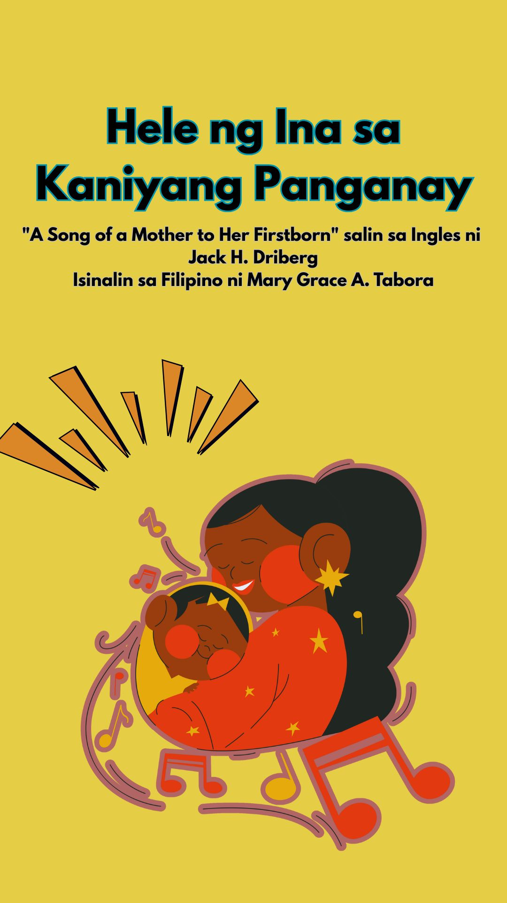
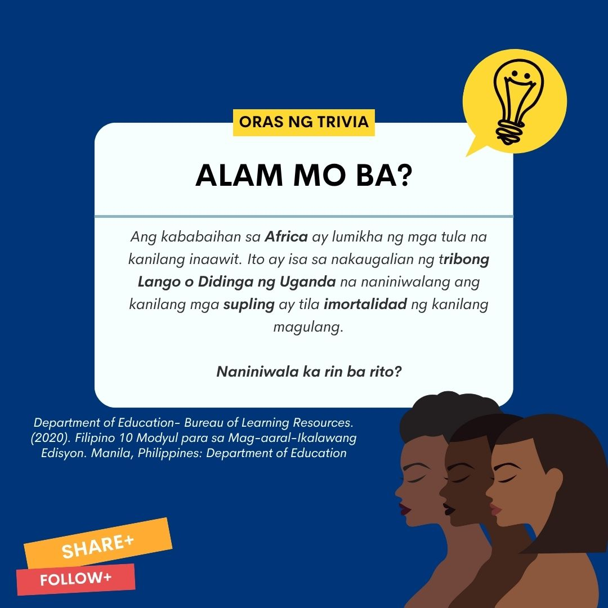
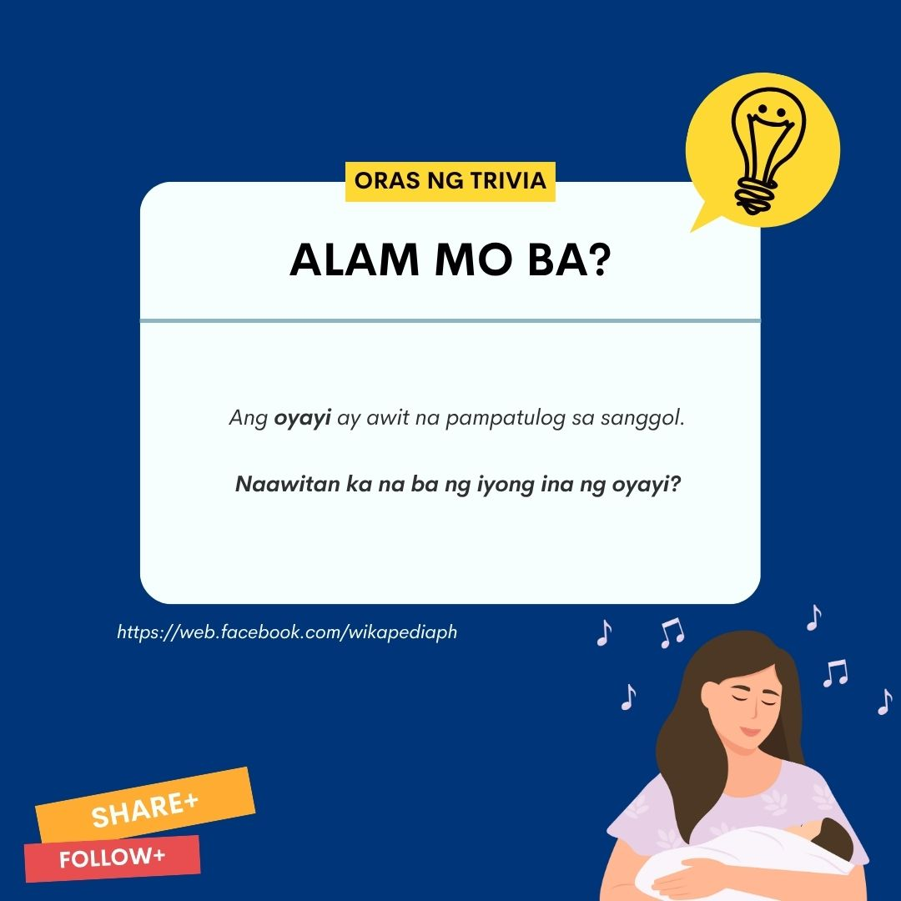
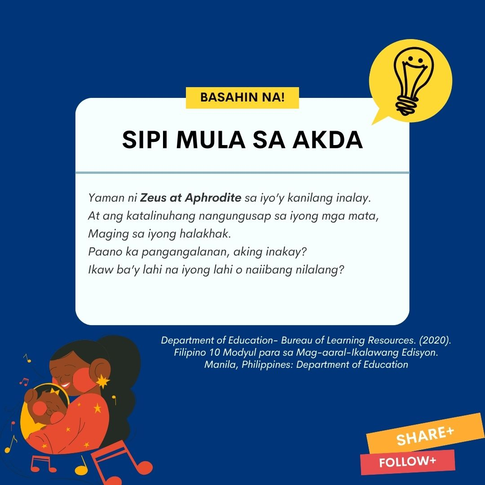
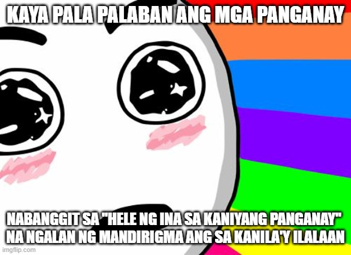
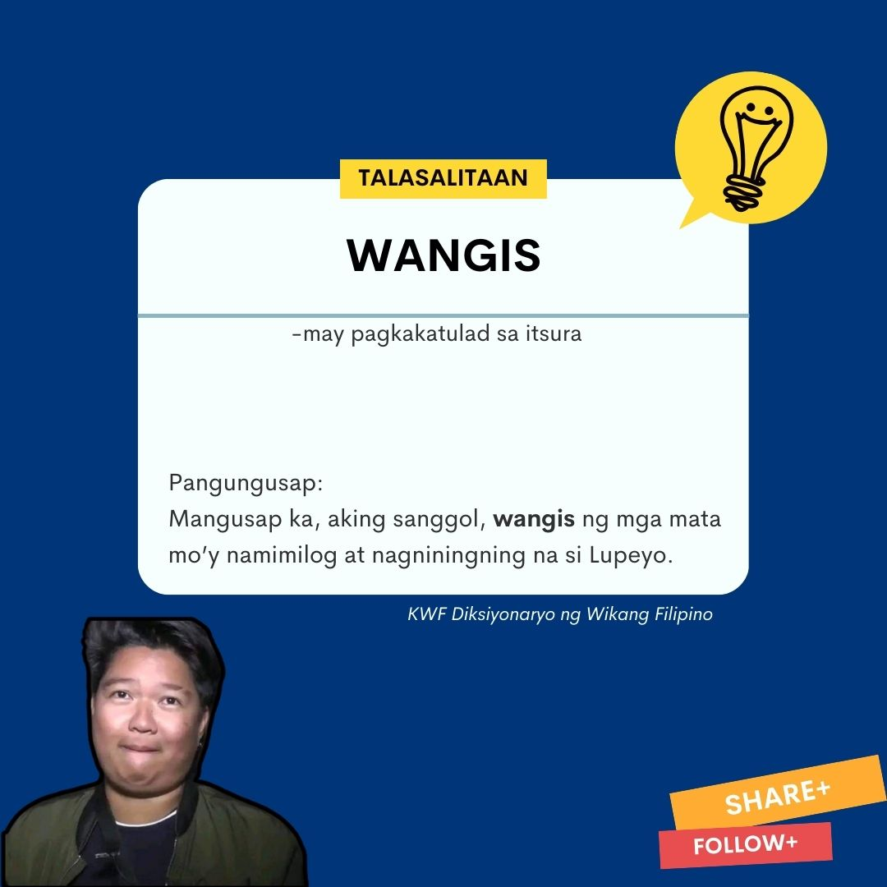
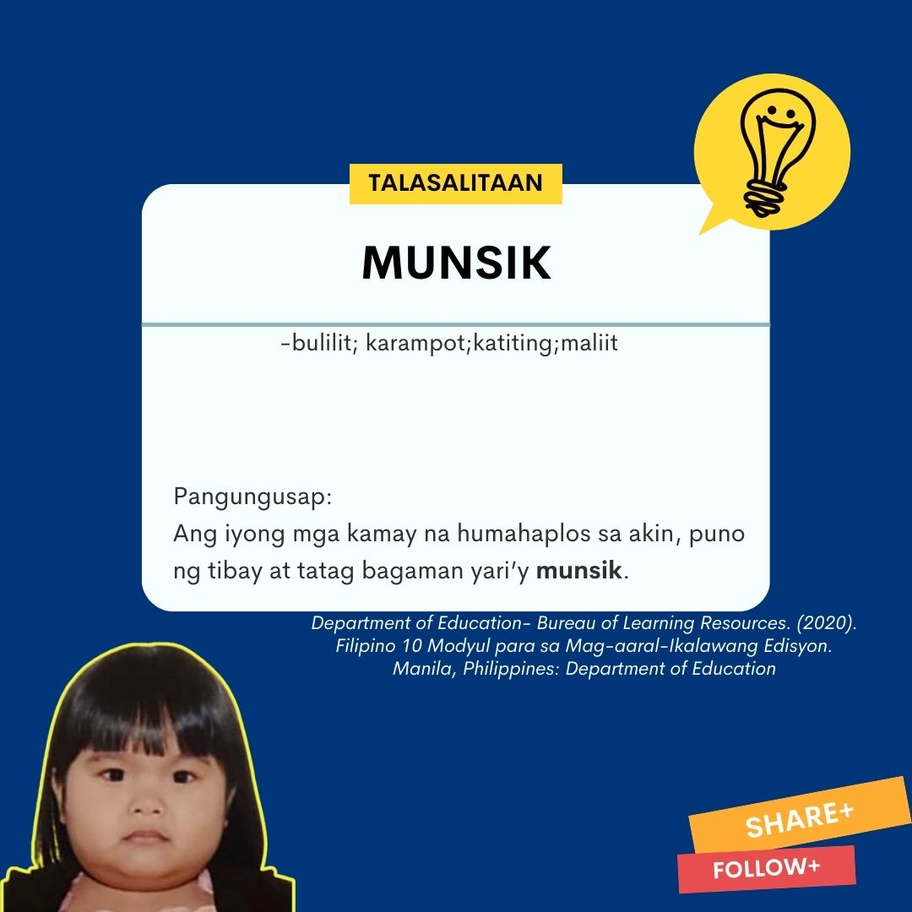

Sanggunian - 2020 "Department of Education- Bureau of Learning Resources. Filipino 10 Modyul para sa Mag-aaral-Ikalawang Edisyon. Manila, Philippines: Department of Education
Isinalin sa Filipino ni Mary Grace A. Tabora
Mangusap ka, aking sanggol na sinisinta.
Mangusap ka sa iyong namimilog at nagniningning na mga mata,
Wangis ng mata ng bisirong-toro ni Lupeyo.
Mangusap ka, aking musmos na supling.
Ang iyong mga kamay na humahaplos sa akin.
Na puno ng tibay at tatag bagaman yari’y munsik
Magiging kamay ito ng mandirigma, aking anak.
Kamay na magpapasaya sa iyong ama.
Tingnan mo’t nananabik na ako’y sapulin:
Nagbabalak nang humawak ng panulag na matalim.
Aking giliw, ngalan ng mandirigma sa’yo ilalaan,
at mamumuno sa kalalakihan.
At ika’y hahalikan sa yapak ng mga kaapo-apohan,
Kahit pa malaon nang naparam sa sanlibutan.
Ngunit lagi kong maaalala ang pagkapit mo sa akin,
Maging ang paghimlay mo sa aking dibdib,
At ang pagsulyap-sulyap sa akin.
Kapag ika’y itinanghal na gererong marangal,
Ako’y malulunod sa luha ng paggunita.
Munting mandirigma, paano ka namin pangangalanan?
Masdan ang pagbubuskala sa pagkakakilanlan.
Hindi hamak na ngalan sayo’y ibibigay,
Hindi ka rin ipapangalan sa iyong amang si Nawal sapagkat ika’y panganay.
Higit kang pagpapalain ng poon at ang iyong Kawan
Ikaw ba’y tatawaging “Hibang” o “Kapusugan?”
Ikaw ba’y tatawaging waring dumi ng baka na “anak ng kamalasan?”
Ang poo’y di marapat na pagnakawan,
Sa iyo’y wala silang masamang pinapagimpan.
Ika’y kanilang pinaliguan at dinamitan ng kagandahan
Ika’y biniyayaan ng mga matang naglalagablab.
At ang pambihirang pangungunot ng iyong kilay
Ay hindi ba palatandaan na ika’y maingat nilang pinanday?
Yaman ni Zeus at Aphrodite sa iyo’y kanilang inialay.
At ang katalinuhang nangungusap sa iyong mga mata,
Maging sa iyong halakhak.
Paano ka pangangalanan, aking inakay?
Ikaw ba’y lahi na iyong lahi o naiibang nilalang?
Munting mandirigma, sinong anito sa iyo’y nananahan?
Kaninong mapagpalang kamay ang sa aking dibdib dumadantay?
Sinong yumuyungyong sa iyo’t nagpapasigla ng buhay?
Ikaw ba’y kanlong ng kapayapaan?
Ngunit ika’y tila leopardong nasa palumpong at tumatanaw.
Hayaan, sa araw na yao’y iyong ibubuyangyang.
Aking supling, ngayon ako’y nasa kaluwalhatian.
Ngayon, ako’y ganap na asawa.
Hindi na isang nobya, kundi isang ina.
Maging maringal, aking supling na ninanasa
Maging mapagmalaki kaparis ng aking pagmamalaki.
Ika’y magbunyi kaparis ng aking pagmamalaki.
Ika’y irugin kaparis ng pagliyag na aking nadarama.
Anak, na ibinunga ng pag-ibig ng matipunong kabiyak.
Sa wakas, ako’y kahati ng kaniyang puso, ina ng kaniyang unang anak.
Ang kaniyang kaluluwa’y ligtas sa iyong pag-iingat,
Aking supling, ako, ako na sadyang sa iyo’y humulma.
Samakatuwid, ako’y minahal.
Samakatuwid, ako’y lumigaya.
Samakatuwid, ako’y kapilas ng buhay.
Samakatuwid, ako’y nagtamasa ng dangal.
Iingatan mo ang kaniyang libingan kung siya’y nahimlay.
Tuwinang gugunitain yaring kaniyang palayaw.
Aking supling, mananatili siya sa iyong panambitan,
Walang wakas sa kaniya’y daratal mula sa pagsibol ng ‘yong kabataan.
Ikaw ang kaniyang kalasag at sibat, pag-asa’t kaligtasan sa hukay.
Sa iyo, siya’y muling mabubuhay tulad ng suwi sa kalupaan.
At ako ang ina ng kaniyang panganay.
Ika’y mahimbing, supling ng leon, ngyongeza’t nyumba.
Ika’y mahimbing,
Ako’y wala nang mahihiling.





